1. Set stitch regulator for desired stitch length.
2. Position needle in fabric about 1/2 inch from edge.
3. Raise stitch regulator to reverse.
4. Lower presser foot.
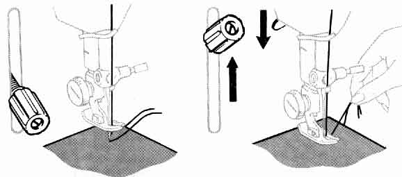
5. Backstitch to edge of fabric for reinforcement.
6. Lower stitch regulator for forward stitching of seam.
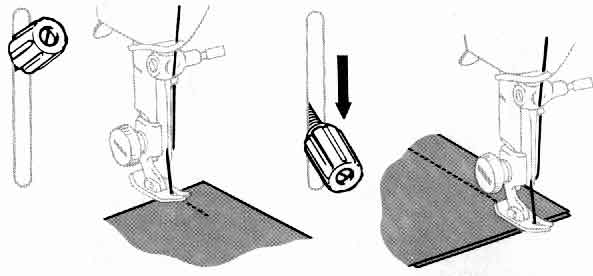
7. When you reach the end of the seam, raise stitch length regulator and backstitch to reinforce seam.
8. With take-up lever at its highest position, raise presser-foot, remove fabric by drawing straight back and cut threads with thread cutter as shown.
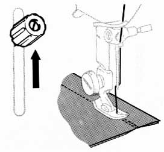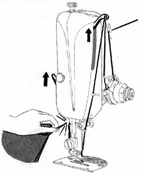
If you wish to stitch a square corner, the guidelines on the throat plate will enable you to make a perfect right angle without measuring. (Each short horizontal line represents the same distance from the needle as the vertical line it crosses.) Suppose, for example, that you wish to make a square corner on a 5/8 inch seam:
1. Line up fabric edge on guideline 5.
2. Stitch until the bottom edge of the fabric is on the horizontal line that crosses guideline 5.
3. Stop the machine as the needle is entering the fabric.
4. Raise presser foot.
5. Pivot the fabric counterclockwise: again line up seam edge with guideline 5.
6. Lower presser foot and continue stitching.
GUIDING AND SUPPORTING FABRICS
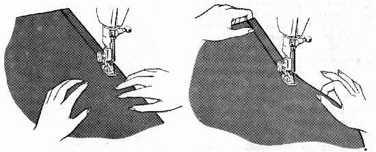
Most fabrics need to be guided in front of the presser foot only, as shown at left. Some fabrics, however, require support while being stitched:
With just a little practice you will be able to darn clothing and your household linens effortlessly and quickly on your Featherweight.
1. Adjust Stitch Length Regulator for desired stitch length (usually about 10 or 12).
2. Decrease pressure by turning Pressure Regulator thumb screw anti-clockwise. Pressure should be lighter than for normal sewing but not too light to prevent work from feeding smoothly.
3. If area to be darned is open, baste an underlay in place.
4. Place area to be darned under presser foot.
5. Lower presser foot and start stitching, alternately letting fabric feed normally away from you and then gently pulling fabric toward you. Continue this forward and backward motion until area to be darned is filled with parallel lines of stitching.
6. For additional strength, turn fabric and cover area with crosswiae lines of stitching.
HOW TO USE THE ATTACHMENTS
The attachments that come with your Featherweight are designed to help you do tricky sewing jobs with ease. Resist the temptation to hide them in the back of your sewing drawer!
THE ZIPPER FOOT
(Part No. 16127)
The narrow Zipper Foot makes it easy to place stitching close to a raised edge -- either a zipper or cording. Also, the hinge in the foot makes it ride easily over pins, heavy layers of fabric, or cross seams.
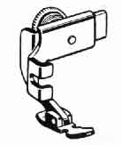Use the Zipper foot for --
Zipper Insertions
Tabular Cording
Corded Seams
Slipcover Welting
To Attach the Zipper Foot --
1. Loosen the large screw at the left of the presser bar and remove presser foot (You do not need to remove the screw).
2. Hook the prongs of the Zipper Foot around the presser bar from the back, and tighten the presser-bar screw.
3. If the raised edge (zipper or cording) is to the right of the needle, adjust the Zipper Fot by loosening the thumb screw at the back of the foot and sliding foot to the left of the needle. If the raised edge is to the left, slide foot to right.
4. With presser foot down, check its position by lowering needle into side notch, making sure it just clears the foot.
5. Tighten thumb screw to lock foot into position.
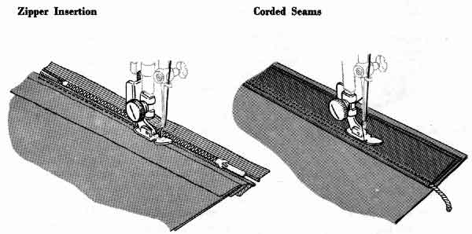
THE BINDER FOOT
(Part No. 121464)
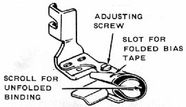With the Binder Foot, you can apply bias binding to an unfinished edge in a single operation. Such binding can be a colourful trim for children's clothes, aprons, or household textiles. Or it can be a practical finish for seam edges that might ravel.
If you buy ready made binding use that which measures 5/8 inch wide. This may be purchased from any Singer Sewing Centre, is specially made for use in the binder and is available in a good range of colours. If you make binding yourself be sure to cut it one inch wide to allow for turnings.
To Attach the Binder Foot --
1. Loosen the large screw at the left of the presser bar and remove the presser foot. (You do not need to remove the screw.)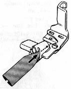
2. Hook the prongs of the Binder Foot around the presser bar from the front, and tighten the presser-bar screw
To Apply Binding --
1. Cut end of binding diagonally to form a long point (as you would cut a ribbon).
2. If the binding is folded, insert pointed end (from the outside of the scroll) into the slot and pull it through the scroll until evenly folded edges are under the needle.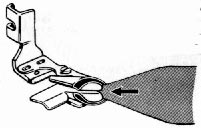
3. If the binding is not folded, insert it directly into the end of the scroll and pull it through until evenly folded edges are under the needle.
4. Insert edge to be bound in centre slot of scroll.
5. Position needle in fabric, lower pressure foot, and stitch.
Never pull binding as it feeds through the scroll. Let the Binder Foot do the work. Just guide the edge to be bound into the centre of the scroll as you stitch.
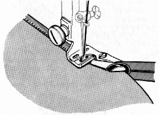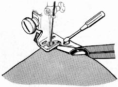
To Adjust Binder Foot --
To position stitching in relation to the binding edge, adjust the Binder Foot.
1. Loosen adjusting screw.
2. Move scroll to right or left as necessary.
3. Tighten adjusting screw.
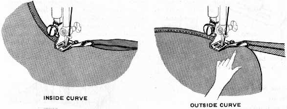
To Bind Curved Edges --
Curved edges require slightly different fabrics handling from straight edges. Inside curves should be straightened as they are fed into binder. If fabric is soft and has a tendency to stretch, reinforce edge with a single row of stitching before binding.
Outside curves tend to lead away from centre slot of scroll and should be guided so that a full seam width is taken at needle point. Do not attempt to pull or straighten fabric into full length of scroll.
(Part No. 25527)
The Seam Guide will help you stitch seams of perfectly uniform width. It is especially useful for hard-to-handle fabrics or for curved seams. When you use it, you can place stitching at any distance between 1/8 inch and 1-3/8 inch from the edge of the fabric.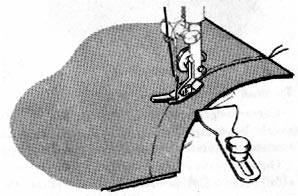
Use the Seam Guide for --
Seams
StayStitchingTop Stitching - Single or Multiple Rows
To Attach the Seam Guide --
Place screw in either of the two holes to the right of the slide plate.
For straight seams: Align guide with presser foot. Pin seam edges and baste if necessary. Guide fabric edges lightly against guide while stitching.
For curved seams: Set attachment at an angle so that end closer to needle acts as a guide. Shorten stitch length for greater elasticity and strength.